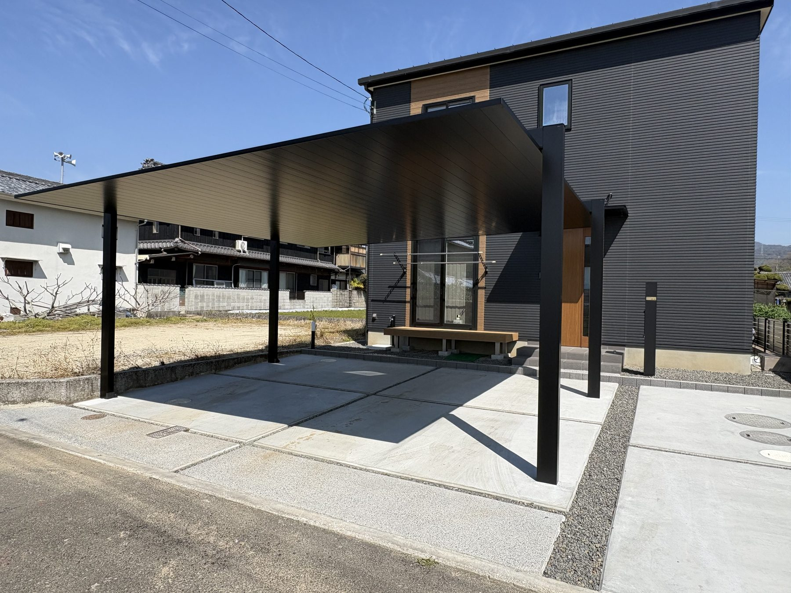
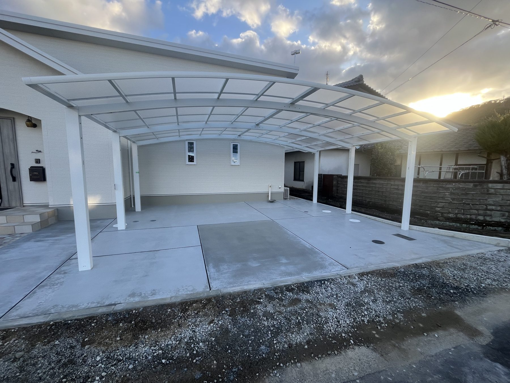
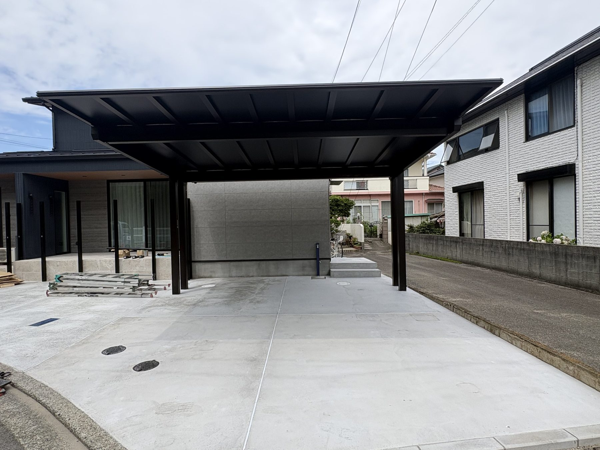
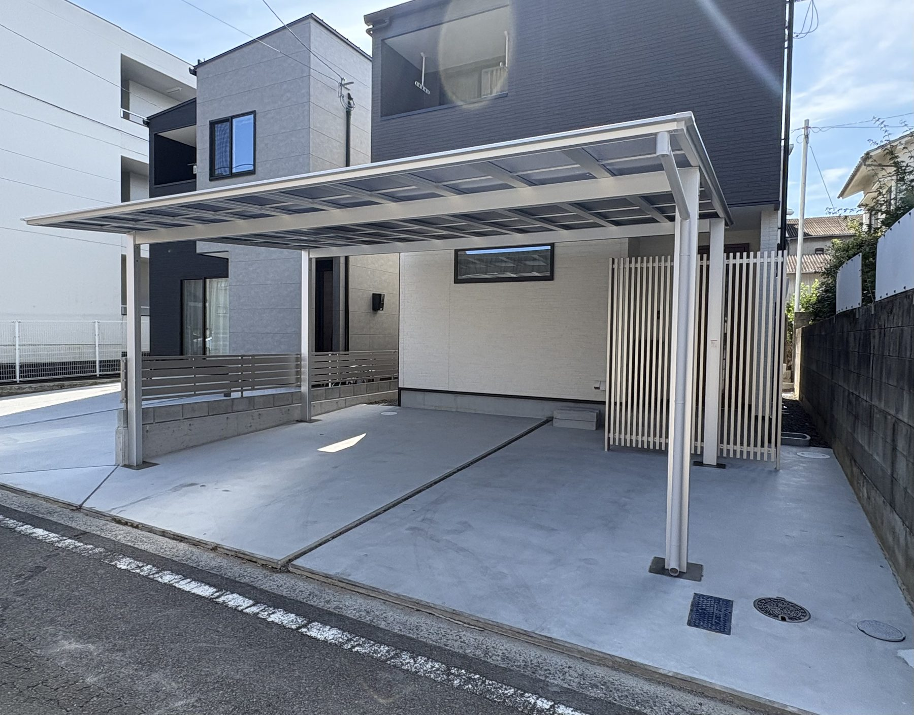
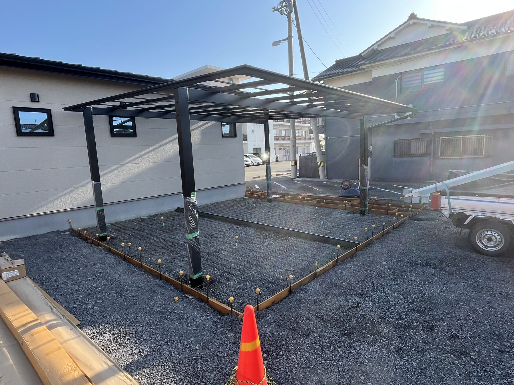

仕様情報と写真をセットで
メーカー、商品名、サイズ、屋根材、工事内容を施工写真と一緒に整理します。
カーポート施工店、アルミ工事店、エクステリア金物を扱う一人親方へ。写真だけでなく、商品と施工の情報まで整理し、専門店として選ばれる材料を残します。
同じカーポートでも、商品、サイズ、敷地条件、柱位置、屋根材、納まりは一件ずつ違います。専門施工店の価値は、完成写真だけでは伝わりきりません。
C-WEBでは、施工前後の変化と工事内容を一件ずつ蓄積。相談前のお客様が、施工店の知識と対応範囲を確認できるホームページにします。
商品情報と現場で行った工事を、写真と一緒に分かりやすく掲載します。似た条件のお客様が、自分の計画に近い事例を見つけやすくなります。
工事前、施工中、完成後を組み合わせることで、見た目だけでは分からない施工店の仕事を伝えます。





PCを開かず、施工を終えた現場から写真と情報を残せます。公開後も自分で育てられる設計です。
メーカー、商品名、サイズ、屋根材、工事内容を施工写真と一緒に整理します。
写真の追加・削除・並び替え、公開・非公開の切り替えまで現場側で行えます。
余計な資料準備を求めず、LINEとスマホ確認を中心に、長時間のWeb打ち合わせを極力減らします。
独立直後や下請け中心の場合、自社実績として自由に使える写真がないこともあります。
必要な画像を複数用意し、選んでいただけます。実績ではない画像には「施工イメージ」と明記します。
受注した施工実績が増れたら、ご自身のスマホから本物の写真へ差し替え、専門店としての実績を育てられます。
※独自ドメインや運用に必要な維持費は、ご契約前に年額まで明示します。
はい。メーカー、商品名、サイズ、屋根材、工事内容などを施工事例ごとに整理できます。
はい。テラス、サイクルポート、フェンス、門扉など、対応しているアルミ工事も専門性を保ちながら掲載できます。
はい。施工イメージと明記した画像で開始し、実績が増えたらスマートフォンから自社施工写真へ差し替えられます。
施工写真の日常的な追加・削除・並び替え・公開設定は、ご自身のスマートフォンで行えます。
まだ依頼を決めていなくても大丈夫です。